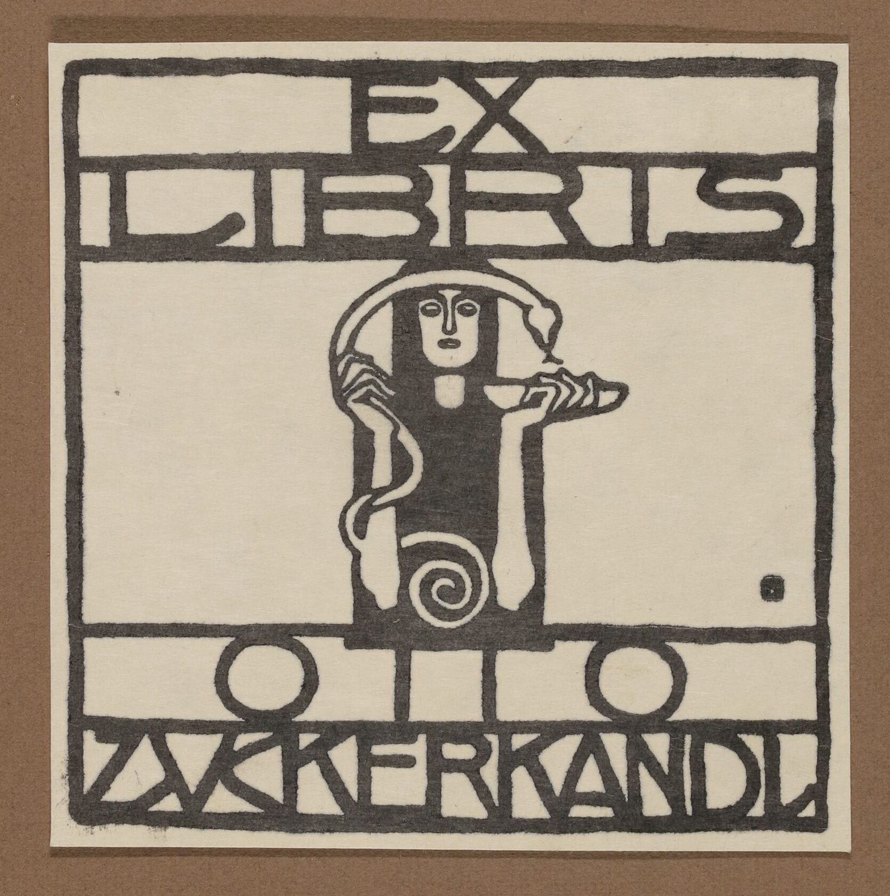

References / Book / 128
Bookplate for Otto Zuckerkandl
Koloman Moser’s square bookplate of 1906 fits every letter into a ruled band, and sets one frontal figure on the central axis between them.
- Source
- MAK Collection Online: Exlibris für Otto Zuckerkandl, KI 9136-3859
- Creator
- Koloman Moser
- Made
- 1906
- Style
- Vienna Secession (agent-proposed, not yet reviewed by a person)
- Moods
- Geometric, austere, precise
- Evidence
- Downloaded and inspected the MAK photograph of the impression MAK KI 9136-3859 (1671 × 1680 px). The MAK also holds the Wiener Werkstätte design sheet for the same bookplate (KI 12558-1), which I looked at only as a small image.
- Reviewed
- Rights
- Open license, stored. License: public domain. Rights policy
Context
The MAK records the bookplate as designed by Koloman Moser in Vienna in 1906 for Otto Zuckerkandl, printed from a block on paper, 8.5 × 8.5 cm. The plate is signed “KM”. It came to the museum with the Artur Wolf collection in 1933. MAK KI 9136-3859.
A design sheet for the same bookplate carries the Wiener Werkstätte stamp. MAK KI 12558-1.
Moser co-founded the Wiener Werkstätte with Josef Hoffmann in 1903 and left it in 1907. Wikipedia: Koloman Moser.
Observed
- The print is square, in black ink on cream paper, inside a thick hand-cut black frame.
- “EX” and “LIBRIS” sit in two ruled bands at the top; “OTTO” and “ZUCKERKANDL” sit in two bands at the bottom.
- The capitals are drawn from straight strokes and full circles, and are stretched or compressed so that each word fills its band from edge to edge. The U is drawn as a V.
- A frontal female figure stands on the central axis in a dark rectangular robe. She holds a bowl, a snake curves over her head, and its tail ends in a spiral at the bottom.
- The figure’s rectangle cuts through the lower band rules, so the image and the lettering lock together.
- A small square mark with a dot sits at the lower right of the central field.
- Wide areas of the central field are left blank.
Why it belongs
This is the Secession lettering rule in its plainest form: the text is set by the frame, not by a font. Each line takes the full width, whatever the letter count, so letter widths change from line to line.
The snake and spiral keep a trace of the curved early style, but they stay inside the figure’s rectangle. The page as a whole is built from squares and bands.
Borrow
Put headings in full-width ruled bands, and stretch or condense the capitals so each word fills its band.
Let one central element break through a band rule to join image and text.
Use a single small square mark as a signature or end mark.
Measured
Machine-extracted by tools/image-traits.py on . Full measurement.
- Mean chroma
- 0.12
- Palette
- #d0c5af 50%
- #504943 17%
- #84664f 16%
- #433d37 4%
- #725842 3%
- #5e574f 2%
- #bab1a1 1%
- #a09789 1%

